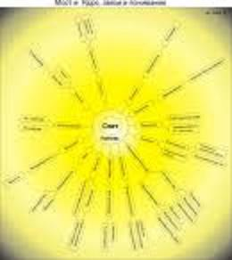

ИЗДАНИЕ 29

Перед тем как приступить к тренировкам, необходимо усвоить следующие правила.
1. Телепатические способности можно использовать
только во благо людям. Использование их во зло влечет
страдания самого телепата и объекта его воздействия.
2. Человек, использующий телепатические способности,
должен обязательно уметь накапливать прану и иметь дос
таточно большой запас ее в нервной системе.
3. Необходимо быть здоровым физически и психически.
4. В вашей жизни должен постоянно присутствовать по
ложительный настрой. Нужно внушить себе, что в мире, ко
торый вы воспринимаете с помощью обычных органов
чувств, все обстоит как нельзя лучше, а если и случается
что-то несуразное, то недалеко то время, когда и оно ис
чезнет.
5. Нужно уметь управлять собой в любых условиях.
6. Уметь расслабляться, освобождать тело от напряже
ния не менее важно, чем уметь концентрировать, направ
лять и посылать энергию отдельным участкам тела или во
внешнюю среду.
Условия для занятий и позы.
Первое время нужно заниматься в отдельном помещении при полной тишине. В помещении должна быть нормальная влажность, желательно убирать или закрывать резервуары с водой, поскольку вода
- активный поглотитель радиоволн. Не следует заниматься
во время дождя или грозы. Поблизости не должно быть ме
таллических предметов, имеющих связь с землей, а также
работающих электрических приборов. Не следует занимать
ся в условиях повышенного радиоактивного фона.
Рекомендуется использовать следующие позы йогов: Сукхасана - приятная поза, Сиддхасана - поза адапта йоги, Ваджарасана - поза алмаза. Ардха Падмасана - поза полулотоса, Падмасана - поза лотоса.
Приемлемым может быть положение сидя на стуле или лежа на полу при обязательном соблюдении следующего условия: голова, шея и спина - на одной прямой линии.
В положении сидя на стуле туловище должно быть наклонено вперед таким образом, чтобы подбородок находился на линии, проходящей через середину бедер; руки ладонями вниз должны без напряжения лежать на коленях; голова приподнята.
Передача энергии и информации идет от индуктора к реципиенту.
Индуктором в телепатии называют человека, являющегося источником информации, реципиентом - человека, воспринимающего информацию.
Прежде чем учиться вступать в телепатическую связь с другим человеком, а также с общим биомагнитным полем, нужно определенное время (5-6 месяцев) заниматься освобождением сознания по классической методике Раджа-Йоги (Прашьяхара - Дхарана - Дхияна) или по упрощенной методике Раджа-Йоги (Прашьяхара - ритмическое дыхание
- психическое дыхание). В результате этих занятий придет
умение настраиваться на биополе другого человека и на
общее поле.
1. Выполнив ритмическое дыхание, вы почувствуете, что
ваше сознание как бы расширяется, раскрывается для при
ема информации, для осознания без ощущений. В вашем
мозгу иногда будут звучать голоса каких-то людей, проно
ситься их мысли, восприниматься осознанные ими ощуще
ния: запахи, голоса, вкус и др. Затем вы вдруг откроете в
себе способность "видеть" в полной темноте, видеть даже
с закрытыми глазами. Через определенное время занятий
вы почувствуете накатывание мягких и в то же время мощ
ных волн энергии (обычно это бывает перед засыпанием).
2. Выполнив психическое дыхание, вы получите возмож
ность настроиться на биополе определенного человека или
на общее поле.
Настройка (постепенное нащупывание ритма) на биополе другого человека или на общее поле происходит рефлексивно. Человека, который начал тренировать свои телепатические способности, можно сравнить с ребенком, крутящим ручку настройки приемника, не имеющим понятия о радиосвязи и устройстве приемника: в конце концов, он случайно натыкается на интересующую его передачу.
По мере работы над собой приходит знание "шкапы диапазона", и человек вполне сознательно, безошибочно находит "станцию", которая его интересует.
Очень важно помнить о необходимости положительного отношения к реципиенту. Обычно наше мышление носит абстрактный характер, (мы оперируем категориями без конкретной их привязки), и лишь в том случае, когда мысль конкретизируется, возможна эмоциональная окраска с участием органов чувств. В результате - наращивание мощности, излучение информационно-энергетического комплекса в среду, т. е. излучается телепатема.
Чтобы восприятие информации от другого человека перестало быть эпизодическим, спонтанным и стало стабильным и управляемым, нужно овладеть в совершенстве методом передачи собственной энергии в поле чужого сознания. С этой целью в течение нескольких недель отрабатывается упражнение по посылке собственной праны в чужое сознание.
Упражнение "Направление праны человеку, находящемуся вне зоны видимости"
Это упражнение необходимо выполнять постоянно.
Сядьте в одну из удобных, поз - алмаза, лотоса, полулотоса или просто на стул. Вспомните одного из ваших хороших знакомых, общение с которым и воспоминание о котором для вас всегда приятны.
Ход ваших мыслей рационален, но не исключается и эмоциональная окраска.
Теперь подумайте, что бы приятное вы могли сделать для человека, о котором думаете, чем бы могли помочь ему. Думайте, ищите до тех пор, пока не почувствуете легкого озноба в области спины (стеснения в области груди, озноба во всем теле или ощущения, будто по всему вашему телу прошла какая-то странная теплая волна). Такое ощущение будет означать, что успех достигнут.
Упражнение для отработки восприятия информации от другого человека
Сразу же после направления телепатемы (сопровождаемой ощущением так называемого экстаза удачи) человеку, находящемуся за пределами зрительной и слуховой связи, постарайтесь представить себе, что он находится рядом с вами и настороженно прислушивается: "Кто это меня позвал?". Всеми силами старайтесь думать о нем только хорошо, испытывать по отношению к нему чувство глубокой благодарности, удовлетворения актом направления ему информации.
Затем, если хотите двусторонней связи, нарисуйте в воображении свой собственный образ и подарите его - постарайтесь вызвать у себя такое чувство, которое можно испытать при желании отдать все, даже самого себя, другому человеку. Если вам это удастся,^вы снова ощутите теплую волну во всем теле (озноб) и в то же время - встречную волну установления двусторонней телепатической связи. Это начало информационной энергетической связи. Вы можете мысленно задавать определенные вопросы и получать интересующую вас информацию. При этом нужно помнить, что связь может порваться, если оставить без ответа встречные вопросы или потерять непередаваемое чувство своеобразного напряжения, сопровождающее телепатическую связь.
Помните: вступать в телепатическую связь можно только при условии хорошего физического и психического состояния (иначе ваши заболевания в результате информационно - энергетического обмена могут перейти к реципиенту).
Упражнения на восприятие информации из общего биомагнитного поля
Сущность упражнений, выполняемых для отработки воеприятия информации из общего биомагнитного поля, - в максимальном сосредоточении освобожденного сознания на определенной идее.
Упражнение, которое предлагается ниже для отработки восприятия определенной информации из общего биомагнитного поля, нужно выполнять с большой осторожностью и всего несколько раз.
Упражнение "Восприятие определенной информации"
Вначале вам нужно четко сформулировать определение интересующей вас информации из области знания, о которой вы не имеете никакого представления. Проделав все необходимое для полного или частичного освобождения сознания, направьте мысль на то, что вам известно о данном объекте, стойко удерживая его в сознании. Старайтесь по возможности осознать процесс мелькания в вашем поле новых мыслей, которые будут обогащать ваше знание о предмете. Ни в коем случае нельзя допускать "разбрасывания" мыслей вокруг предмета. Почувствовав легкую усталость, медленно, постепенно ослабьте внимание, проделайте очистительное дыхание. Прикажите себе "спать".
ПСИХИЧЕСКОЕ НАПАДЕНИЕ
Психическое нападение - нападение извне, исходящее от другого человека, с которым подвергшийся нападению не находится в непосредственном контакте. Следствие психического нападения - различные психофизиологические состояния: низкий жизненный тонус, потеря интересак жизни, беспокойство и др.
ЭНЕРГЕТИЧЕСКОЕ НАПАДЕНИЕ
Энергетическое нападение - это такое нападение, когда один человек берет энергию другого. Такого человека парапсихологи называют "сапером", или "вампиром". "Вампир" не может (или не хочет) получать и использовать энергию из природного океана энергии и берет "переваренную" (трансформированную в чакрах) энергию у людей, находящихся в непосредственной близости. "Вампиры" обычно не осознают, что притягивают энергию от других людей. Есть "вампиры", которые "выколачивают" чужую энергию голосом или глазами.
НАПАДЕНИЕ С ПОМОЩЬЮ МАНИПУЛИРОВАНИЯ АУРОЙ
Если вы предполагаете использовать психическое нападение во благо общества или другого человека, подвергающегося нападению, тогда оно оправдано; в противном случае такое нападение принесет вред и тому, на кого нападают, и самому нападающему.
Научиться воздействовать своей аурой на ауру другого человека, а также развить способности к телекинезу, т.е. способности приводить предметы в движение без видимого прикосновения к ним, помогают следующие подготовительные упражнения.
1. На тонкой шелковой нити подвесьте легкий маленький
шарик (из любого материала). Представьте, что прана скон
центрирована в солнечном сплетении. Дышите через лег
кие как можно чаще. Затем постепенно переходите к пси
хическому дыханию, одновременно сводя на нет легочное.
Положив локти на стол, приблизьте пальцы рук к шарику на
расстояние до 2-3 см. Представьте, что процесс психичес
кого дыхания то отклоняется, то приближается к пальцам
правой или левой руки. После того, как вы убедитесь в том,
что шарик действительно реагирует на ваши движения, пе
реходите к следующему упражнению.
2. Зафиксировав взглядом шарик, сконцентрируйте на
нем все свое внимание. Старайтесь представить, что силой
вашего взгляда вы отклоняете шарик в сторону.
3. Зафиксировав взглядом шарик, закройте глаза. Ста
райтесь представить, что остро направленная струя - по
ток ауры - отклоняет шарик вправо или влево, удерживая
его в определенном положении, под определенным углом к
горизонту. Открыв глаза, проверьте результат упражнения.
Если мысленное упражнение с аурой не дает быстрого эф
фекта, используйте силу слова, т.е. говорите вслух о том,
чего вы ожидаете, рассуждайте о том, почему и какэтодол:
жно произойти. Сила слова может возбудить (при недостат
ке фантазии, представлений) обмен энергией и ее направление другому объекту больше, нежели невысказанные желания.
4. Постарайтесь вызвать перемещение легких предме
тов (бумажек, кусочков поролона, спичек и т.п.), сосредо
точив на них внимание. При этом следует помнить, что ни
пальцы, ни глаза не являются источником или фокусирую
щим приспособлением для направления энергии. Нужно
представлять себе, будто весь ваш организм, все ваши "я"
превратились в острие, с которого стекает энергия. Упраж
нение можно проводить как с открытыми, так и с закрытыми
глазами.
5. Представьте, что перед человеком, которого вы хоти
те остановить, вдруг возникла стена, препятствие, и чело
век не в состоянии двигаться дальше.
Освоив это упражнение, переходите к упражнению, в котором попытайтесь остановить любой механизм. При этом очень важно не думать о механизме воздействия, а на основании предыдущих опытов верить, что произойдет то. что вы задумали. Можно не только перемещать предметы и останавливать по своему желанию людей, но и воздействовать ... даже на небо. Например, разгонять тучи. Методика следующая: нужно представить себе, что ладонь руки излучает энергию. Через некоторое время (от нескольких минут до 10) можно увидеть на ладони мерцающие точки, из которых к облакам поднимаются лучи. Пучок энергии направляется в то место, где должно находиться в данный момент Солнце. Когда луч с вашей руки доходит до облаков, нужно мысленно увидеть, как происходит их рассасывание. Постепенно в руке начинает ощущаться тяжесть, словно она держит тяжелый предмет. Затем появляется легкая вибрация во всем теле.
Упражнение "Нападение аурой"
1. Включение ауры другого человека в собственную ауру.
Мысленно в представлениях как бы накидывайте свою ауру,
обнимая ею избранного для эксперимента человека. Ста
райтесь сосредоточить свои мысли на том, что вы и он -еди
ное целое, что ваши мысли и ваши желания - это его мысли
и его желания и ваша сила - его сила.
2. "Превращение в острие". Мысленно представьте, что
вы превращаетесь в острие, с которого как бы стекает мощ
ный четко направленный информационно - энергетический
поток, фиксирующийся в наиболее слабой точке ауры объек
та. Это может быть, например, порочная наклонность или
какой-либо физический недостаток. Делая несколько захо
дов, затрагивая каждый раз слабую струну, настраивая свои
мысли в унисон мыслям объекта, вы рано или поздно добь
етесь успеха, причем через некоторое время результаты с
одного избранного участка распространятся на всю ауру.
Помните: растворение собственной ауры в ауре другого человека - достаточно коварный способ воздействия. Поэтому перед началом воздействия нужно выделить особенно хорошие черты характера человека. Мысленно восхищайтесь характером человека, его устремлениями, его аурой. Так же, как и в предыдущих упражнениях, вы непременно должны ощущать "экстаз удачи".
Упражнение "Нападение с помощью энергетических ударов"
Для выполнения упражнения расставьте ноге, слегка присядьте, руки выставьте вперед (для нанесения и отражения ударов).
Соответствующим образом "настройтесь": сконцентрируйтесь на чувстве ярости. Вспомните все то плохое, что есть в окружающем мире. И мгновенно возненавидьте это в себе, в результате чего в вас родится энергополе, которое уничтожит любое враждебное ему.
Итак, ненадолго расслабьте мышцы. Ощутите, как в ауре тела (в порах кожи) открываются отверстия и через них в тело из пространства по тонким радиальным линиям - прямым лучам длиной 30 - 40 см - начинает вливаться прана. В этом состоянии вы должны ощущать свое тело как однородную гудящую массу частиц праны. Затем после короткого расслабления нужно резко сжать все ткани тела, как бы сокращая "го объем. Прана в лучах получает импульс обратного тока, происходит мгновенный выброс энергии в окружающее пространство во всех направлениях. Сжатие идет на выдохе со звуком "ха", рот и губы при этом напряженно раздвигаются, руки делают рывок-полуудары, ноги прыжком меняют позицию. Затем опять короткое расслабление и последующее сжатие, и так - в течение 2 - 3 мин.
Затем переходите к выбросу энергии через Аджначакру (из области гипофиза), предварительно последовательно ежимая определенные части тела. Сжатие начинайте со ступней, переходите на ягодицы, низ живота, далее - на спину, грудь, плечевой пояс, шею. При последовательном сжатии тканей в нижней части живота, в Манипурачакре (в области солнечного сплетения)создается концентрированный столбик праны (постарайтесь ощутить или представить его). По мере сжатия этот столбик разрастается и. протекая через шею, в Аджначакру, выходит затем из нее монолитным энергетическим лучом, направленным в Аджначакру противника.
ПСИХИЧЕСКАЯ ЗАЩИТА
Во многих жизненных ситуациях человеку требуется психическая защита, а для этого он должен построить неподвижную защитную оболочку.
К примеру, вы находитесь среди людей, которые могут помешать вам сосредоточиться на выполнении какой-либо задачи: это могут быть обычные разговоры, или психическое нападение, или даже подключение к вашему сознанию с целью прочитать ваши мысли. Таким образом, вы должны научиться практически мгновенно создать защитную оболочку, В этом случае вам лучше сесть, руки со сплетенными пальцами положить на колени, ноги поставить вместе, колени плотно прижать друг к другу. Прикройте веки или смотрите в одну точку. Дышите ритмично. Быстро проделайте несколько раз психическое дыхание, концентрируя прану в солнечном сплетении. Затем ритмично, за два-три приема излучите весь ее запас в окружающую вас среду, одновременно зримо представляя себе, как вокруг вашего тела образуется яйцеобразный энергетический панцирь. Старайтесь не думать обо всем том. что еще недавно привлекало ваше внимание, занимало ваши мысли. Мысленно прислушайтесь к отдаленным голосам в мозгу (если они еще остались), усильте плотность ауры направлением добавочного количества праны, приблизив ее к телу. На некоторое время приведите психику в пассивное состояние (освободите сознание).
Существуют и другие способы защиты. Холодный или контрастный душ с выходом на холодной фазе; быстрый танец типа шейка: употребление в пищу острого стручкового перца (иногда в сочетании с чашкой кофе).
СВЕРХЧУВСТВЕННЫЕ ВОСПРИЯТИЯ
Йоги утверждают, что, помимо пяти органов чувств, у человека имеется шестое, с помощью которого он получает сведения о мыслях других людей, находящихся от него на любом расстоянии. Это так называемое телепатическое чувство. Органом телепатического чувства, посредством которого мозг получает информацию в виде определенных колебаний тонкой энергии, исходящей от других людей, служит эпифиз - шишковидная железа, расположенная в промежуточном мозге, красновато-серого цвета, имеющая форму еловой шишки.
Помимо физических органов чувств, человек имеет аналогичные органы чувств в астральном теле, проявляющиеся в астральной плоскости. У экстрасенсов имеется связь между астральными органами чувств и сознанием. Эта связь может быть дана от природы, может возникнуть в результате глубоких психических потрясений или целенаправленных тренировок.
Ясновидение - сверхчувственное восприятие, при котором используется астральное зрение. Чтобы развить в себе способность видеть ауру предметов и людей, тренируйтесь, пристально рассматривая свои веки и контур какого-нибудь . предмета. Расслабив тело, закрыв глаза и частично освободив сознание, усиленно вглядывайтесь вперед, стараясь внимательно разглядеть самые тонкие, чуть заметно вырисовывающиеся очертания на "экране" век в течение 10 мин. Упражняться лучше всего по утрам, сразу после пробуждения или перед сном.
После девяти дней таких занятий можно перейти к следующему упражнению. Нужно расслабиться и, частично ос-вободиг. сознание и приспустив веки, пристально рассматривать в полумраке контур какого-либо небольшого предмета, находящегося в комнате и выбранного вами в качестве объекта. Через некоторое время вы начнете видеть ауру, окружающую этот предмет.
Если вы со временем станете производить такие опыты с людьми, то скоро обретете способность различать цвета их ауры, по которым можно судить о мыслях и характере этих людей.
Ясновидение с помощью выделения астрального тела
Суть этого метода заключается в том. что. послав свое астральное тело в любое место планеты, можно наблюдать все происходящее вокруг него. Для развития способности сознательного выделения астрального тела нужно иметь очень сильную волю и уметь сосредотачиваться. Особенно предрасположены к развитию этой способности люди, летающие во сне. Тем же. кто этой способностью не обладает, прежде чем приступить к основным упражнениям, нужно в течение нескольких недель выполнять подготовительные упражнения по выработке ощущений падения и мысленных прогулок.
В течение дня отводите для выполнения этих упражнений по 5 - 6 мин. Ваша задача - вызвать у себя ощущение, что вы падаете в пропасть. Запомните это ощущение и научитесь вызывать его по своему желанию.
Следующее упражнение таково. Нужно лечь на кушетку, расслабиться, закрыть глаза, заткнуть уши и представить себе, что вы встали с кушетки и ходите по комнате. При этом как можно отчетливее старайтесь увидеть не только обстановку комнаты, но и свое физическое тело. Далее - вместо комнаты для своих мысленных прогулок выберите знакомый дом или улицу.
После выполнения подготовительных упражнений вы можете перейти непосредственно к выделению астрального тела. Нужно лечь, расслабиться, закрыть глаза и заткнуть уши. концентрируя внимание на своем "я". Забыв о теле, желая выделить астральное тело, мгновенно напрягите все мускулы вашего тела и продержите их в таком состоянии 3-4 с. Затем полностью расслабьтесь, вызвав в этот момент ощущение падения в бездну. После выделения астрального тела вы должны увидеть как бы со стороны свое физическое тело. На следующий день попробуйте провести свое астральное тело по квартире, причем выполняйте в это время какие-либо действия в соседней комнате и запоминайте эти действия, чтобы потом проверить их (например, переносите с одного места на другое мелкие предметы, просматривайте книгу и т.д.).
В последующих опытах выделения астрального тела совершите мысленную прогулку к кому-то из ваших знакомых. Дотроньтесь до него, заставьте его почувствовать ваше присутствие. Посмотрите и послушайте, что в это время происходит в его квартире, а затем проверьте достоверность вашего видения.
Помните: осознанное выделение астрального тела требует, помимо большой силы воли, устойчивой психики и большой подготовительной работы над собой, очень большой осторожности.
Качество энергетических излучений, исходящих от живых и неживых объектов, можно определить с помощью таких индикаторов, как маятник и рамка. Эти излучения воспринимаются, как уже сказано, шестым астральным органом чувств и передаются не сознанию, а подсознанию. Подсознание, автоматически обработав ту или иную информацию, выдает определенные ответы через движения рук. в которых находится маятник или рамка. Впервые на практике (цель - поиск воды) была использована так называемая лоза - вилкообразная гибкая ветка орешника в форме буквы "Y". Используется также металлическая рамка из проволоки диаметром 2 мм в форме буквы "Г" с соотношением сторон 1:2.
Непроизвольное движение (вращение) рамки называют биофизическим эффектом.
Одно из назначений рамки - определение геопатогенных зон. Поверхность Земли покрыта геобиологической сеткой. С севера на юг расстояние между образующими ее силовыми линиями составляет 2 м, а с востока на запад - 2.5 м. В узлах этой сетки Земля либо излучает, либо поглощает энергию. Эти разного качества узлы (условно их можно обозначить как "плюсы" к "минусы") расположены в шахматном порядке.
Зачастую состояние нашего здоровья напрямую связано с местом, где мы спим. По специальным данным, практически все без исключения онкологические больные спали в зонах со знаком "плюс". Не только человек, но и домашние животные (за исключением кошек), растения плохо себя чувствуют и даже заболевают, пребывая длительное время в местах расположения узлов геобиологической сетки. Для определения неблагоприятного места в квартире нужно медленно пройтись по комнатам, держа рамку в правой руке (можно две рамки - в двух руках).
Согнув пальцы в кулак (но так, чтобы осталось небольшое отверстие, образованное пальцами и ладонью), поставьте короткий конец рамки вертикально на боковую поверхность мизинца или среднего пальца (в отверстие в кулаке) и регулируйте это отверстие таким образом, чтобы короткий конец рамки мог свободно вращаться вокруг своей оси, поворачивая длинный конец влево или вправо. На "плюсе" рамка повернется вправо, на "минусе" - влево. Определив в результате исследования местонахождение в квартире "плюсов" и "минусов", поставьте кровать, на которой вы спите, в место, где нет ни "плюса", ни "минуса". Если же возможности идеального выбора нет. следует избегать прежде всего "плюса". Кроме того, непременно учитывайте, что спать человек должен вдоль силовых линий, т.е. головой на Север, а ногами на Юг.
Если квартира настолько мала, что перестановка мебели невозможна, нужно положить под кровать наточку пересечения сетки нейтрализатор геопатогенной зоны. Это могут быть: зеркало, канифоль, янтарь, асбест, известь, вар. железная руда, глина, мрамор, из растений - чеснок, лук, папоротник, каштаны.
Уникальные издания.